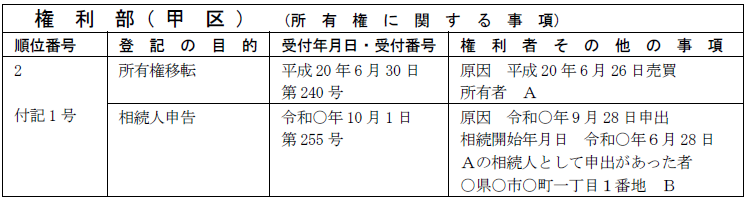
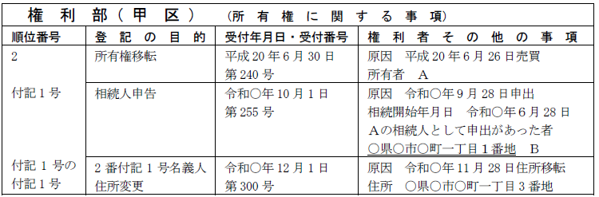

第１編 各 論
第１章 所有権の登記
第２節 所有権移転の登記
Ⅱ 相続の登記
相続が開始した場合に、相続人等が相続登記等を申請する。相続の登記を考えるにあたっては、相続人の確定や相続分の確定等が必要である。これについては、登記独自の問題点を除くと、実体法である民法に従って考えていくことになる。
【申請例20 所有権移転 相続】
事例： 土地の所有者Ａは、令和○年6月28日、死亡した。Ａの相続人は、嫡出子のＢ、Ｃのみである。土地の課税標準の額は、金1000万円である。
1. 相続の登記の申請情報の内容
(1) 登記原因及びその日付
登記原因は「相続」と記載し、日付は被相続人の死亡日を記載する。
(2) 申請人
相続人の単独申請による。戸籍等により相続関係が明確にできるので、共同申請によらなくても登記の真正が確保できるからである。また、相続の登記申請は保存行為にあたり、共同相続人のうちの１人から申請することもできる。
「相続人（被相続人 Ａ）Ｂ」等と、被相続人の氏名を括弧書で記載する。
(3) 添付情報
・登記原因証明情報（61条、不登令別表22添付情報）
①総説
相続を証する市町村長その他の公務員が職務上作成した情報（公務員が職務上作成した情報がない場合にあっては、これに代わるべき情報）及びその他の登記原因を証する情報の提供を要する。
②相続を証する市町村長その他の公務員が職務上作成した情報
被相続人が死亡したこと、申請人が相続人であること及び他に相続人がいないことを証するために提供する。具体的には、戸籍全部事項証明書（戸籍謄本）、除籍全部事項証明書（除籍謄本）、戸籍個人事項証明書（戸籍抄本）がこれに当たる。
「共同相続人中の一人であるＡに相続させる。」との記載のある遺言書を提供して相続による登記を申請する場合の相続を証する情報としては、被相続人の死亡した事実及びＡが相続人であることを明らかにするもののみで足りる（登研386P.99、458P.94参照）。
③その他の登記原因を証する情報
ⅰ 遺言により相続分が指定された場合
→遺言書又は遺言書情報証明書
公正証書遺言以外は、家庭裁判所の検認を受けていなければ却下される。遺言書保管法に基づき遺言書保管所に保管されている遺言書については、検認は不要となる。検認は、遺言書の状態を確認し、その証拠を保全する等の目的でなされるところ、遺言書保管所に保管する遺言書については、保管開始以後、偽造等のおそれがないため、検認は不要とされているのである。
遺言書保管所への遺言書の保管後、遺言者が死亡した場合、相続人・受遺者・遺言執行者等の関係者（遺言書保管法9条1項各号）は、当該遺言書について遺言書情報証明書（遺言書の画像等を用いた証明書）の交付請求（遺言書保管法6条3項）をすることができる。当該遺言情報証明書を提供した場合には、遺言書の原本を提供しなくても、登記申請をすることができる（令3.１.22日司連・遺言書の保管制度への対応プロジェクトチーム作成のＱ＆Ａ）。もっとも、遺言書情報証明書を遺言者の死亡を証する情報として取り扱うことはできない（令2.6.24民2.436）。
遺言者が遺言書と抵触する行為をした場合、抵触した部分は撤回したものとみなされる（民法1023条）。
ⅱ 特別受益者の存在により法定相続分に修正が加わった場合
→特別受益証明書
未成年者も単独で作成することができる。また、特別受益者の相続人が特別受益証明書を作成する場合、相続人全員で作成しなければならない。
ⅲ 寄与分が定められたことにより法定相続分に修正が加わった場合
→寄与分協議
ⅳ 遺産分割協議により法定相続分と異なった場合
→遺産分割協議書
ⅴ 相続欠格者がある場合
→相続欠格に該当することを証する書面
ⅵ 被廃除者がある場合
→被廃除者の戸籍謄本等
ⅶ 相続放棄者がある場合
→家庭裁判所の作成に係る相続放棄申述受理証明書
「相続放棄申述受理通知書」であっても、相続放棄申述受理証明書と同等の内容が記載されていると認められる場合には、登記原因証明情報の一部として提供することができる（登研808号）。
・住所証明情報
登記名義人となる相続人の住民票の写し等
相続人が亡くなっている場合でも最後の住所を証する情報を提供する。
2. 登記申請の可否
(1) 自己の持分のみの相続登記
共同相続人名義となる場合、各相続人から単独で所有権移転登記を申請することができる。この場合、自己の相続分のみについて、相続の登記を申請することはできない（昭30.10.15民甲2216）。
(2) 遺産分割協議等が成立した場合
法定相続分による共同相続登記前に、寄与分協議・特別受益者がいる場合・遺産分割協議・共同相続人に対する相続分の譲渡等により、法定相続分と異なる相続分となった場合、当該協議等により成立した相続分で相続登記をすることができる（寄与分につき昭55.12.20民3.7145）。
(3) 特別受益証明書
(a) 共同相続人がＢ及びＣの2人である被相続人Ａ名義の不動産について、Ｂは、ＣがＡからＣの相続分を超える価額の遺贈を受けたことを証する情報を提供したときは、相続を登記原因として、直接自己を登記名義人とする所有権の移転の登記を申請することができる（明44.10.30民刑904）。
(b) Ａの推定相続人Ｂが、Ａから、相続分を超える生前贈与を受けた後、Ａよ
り先に死亡した場合は、Ｂの代襲相続人Ｃを除く他の相続人は、ＢがＡから、特別受益を受けている旨のＣ作成の証明書を申請情報と併せて提供して、相続の登記を申請することができる（昭49.1.8民3.242）。
(4) 持分放棄
Ａが死亡し、その共同相続人であるＢ及びＣが不動産の共有者となったが、その旨の登記をする前に、Ｂが当該不動産についての持分を放棄した場合には、Ａから直接、Ｃ名義に相続を原因とする移転登記をすることができるか？
→ できない（登研21P.30）。ＡからＢ及びＣへの所有権の移転の登記を申請した後、ＢからＣへの持分全部移転の登記を申請することを要する。相続放棄があった場合と区別する。
(5) 前提としての相続登記
(a) 遺産管理者が、家庭裁判所の許可を得て、遺産に属する不動産を第三者に売却した場合、買主名義に所有権移転登記をする前提として、相続による所有権移転登記をする必要がある（平4.2.29民3.897）。
(b) 遺産分割の審判の前提として家庭裁判所の換価命令に基づき、換価人が遺産を任意売却した場合に、買受人のために所有権移転登記をするには、その前提として相続による所有権移転登記を要する（昭58.3.28民3.2232）。
1. 相続登記の申請義務
(1) 意義
所有権の登記名義人について相続の開始があったときは、当該相続により所有権を取得した者は、自己のために相続の開始があったことを知り、かつ、当該所有権を取得したことを知った日から３年以内に、所有権の移転の登記を申請しなければならない（不登法76条の2第1項前段）。
(2) 趣旨
所有者が死亡し相続が発生しているにもかかわらず、相続登記がされないことが所有者不明土地の発生原因となっているため、相続登記等の申請義務を課し、所有者不明土地の発生を防止しようとするものである。
(3) 申請義務を負う者
所有権の登記名義人について相続が開始した場合、下記のそれぞれの相続人が相続登記の申請義務を負う。
(a) 不動産の承継について遺言がないとき：各法定相続人（不登法76条の2第1項前段）
法定相続分による相続登記を申請する義務を負う。
相続放棄をした者は、はじめから相続人でなかったことになるので（民法939条）、相続登記の申請義務を負わない。
法定相続分による相続登記を申請する前に当該不動産について遺産分割が成立したときは、遺産分割の日から３年以内に当該遺産分割に基づく登記を申請する義務を負う（不登法76条の2第1項前段）。この場合、当該不動産を取得しないことが確定した相続人は、申請義務を負わないこととなる。
(b) 不動産の承継について遺言があるとき：当該遺言により不動産の所有権を取得した者が相続人であるときは、当該相続人
次のいずれの場合も対象となる。これらの遺言がある場合に申請義務を負うのは、当該遺言により不動産を取得した相続人である。
・特定財産承継遺言（不登法76条の2第1項前段）
・相続人に対する遺贈（不登法76条の2第1項後段）
※相続人以外の者に対する遺贈の場合には、所有権移転登記の申請義務はない。遺贈の放棄（民法986条）をせずに積極的な承継をしており、売買等に近い性質を有する点が考慮されたものである。
(4) 申請義務の消滅
上記(3)の規定は、代位者その他の者の申請又は嘱託により、相続登記等がされた場合には、適用しない（不登法76条の2第3項）。
ex．共同相続人のうちの一人が法定相続分による相続登記を申請し、当該登記がされた場合には、他の共同相続人は相続登記の申請義務を負わない。
2. 相続人申告登記の申出
(1) 意義
不登法76条の2第1項の規定（上記1.(3)）により所有権の移転の登記を申請する義務を負う者は、法務省令で定めるところにより、登記官に対し、所有権の登記名義人について相続が開始した旨及び自らが当該所有権の登記名義人の相続人である旨を申し出ることができる（不登法76条の3第1項）。これを、相続人申出という（不登規158条の2第1号）。
相続登記を義務化しても、相続登記に必要な戸籍謄本等の収集など、相続人が手続的な負担を負うことには変わりがないため、相続人が申請義務を履行しやすくする必要があると考えられ、規定されたものである。
相続登記等の申請義務の履行期間内に相続人申告登記の申出をした者は、上記1.(3)の申請義務を履行したものとみなされる（不登法76条の3第2項）。
(2) 申出の方法
相続人申出等（不登規158条の2第8号）は、書面ですることも、オンラインですることもできる（不登規158条の4）。
相続人書面申出：相続人申出書を提出する方法による相続人申出等（不登規158条の2第11号）
相続人電子申出：電子情報処理措置を使用する方法による相続人申出等（不登規158条の2第10号）
【相続人申出書 記載例】
事例： 土地の所有者Ａは、令和○年6月28日、死亡した。Ａの相続人は、嫡出子のＢ、Ｃのみである。Ｂは、同年9月28日、相続人申出をした。
(3) 申出書の内容
(a) 申出の目的
相続人申出の場合：「相続人申告」
相続人申告事項である氏名や住所の変更・更正の場合、「○番付記○号名義人氏名変更」等と記載する。氏名・住所以外の相続人申告事項の更正の場合、「○番付記○号相続人申告事項更正」とする。
相続人申告登記の抹消の申出については、相続人が単独でした相続人申出に係る相続人申告登記の抹消の申出は「○番付記○号名義人抹消」、複数でした相続人申出に係る相続人申告登記の一部の抹消の申出は「○番付記○号名義人一部抹消」とする（令6.3.15民二.535）。
(b) 添付情報
①申出人が所有権の登記名義人の相続人であることを証する情報
申出人が所有権の登記名義人（申出人が所有権の登記名義人の相続人の地位を相続により承継した者であるときは、中間相続人）の相続人であることを証する市町村長その他の公務員が職務上作成した情報（公務員が職務上作成した情報がない場合にあっては、これに代わるべき情報）（不登規158条の19第2項第1号）
②住所証明情報
申出人の住所を証する市町村長その他の公務員が職務上作成した情報（公務員が職務上作成した情報がない場合にあっては、これに代わるべき情報）（不登規158条の19第2項第2号）
③代理権限証明情報
代理人によって相続人申出等をする場合に提供する（不登規158条の6）。
・（相続人申告事項の変更又は更正の申出の場合）相続人申告事項について変更又は錯誤若しくは遺漏があったことを証する市町村長その他の公務員が職務上作成した情報（公務員が職務上作成した情報がない場合にあっては、これに代わるべき情報）（不登規158条の24第3項）
・（相続人申告登記の抹消の申出の場合）当該相続人申告登記が不登規158条の28第1項第1号又は第2号に該当することを証する情報
※相続人申告登記の抹消の申出は、次のⅰ又はⅱのいずれかに該当するときに、相続人申告名義人（当該相続人申告登記によって付記された者(不登規158条の2第4号)）からすることができる（不登規158条の28第1項）。
ⅰ 不登規158条の16第1項第1号から第4号までに掲げる事由のいずれかがあること
ⅱ 相続人申告名義人が相続の放棄をし、又は民法第891条の規定に該当し若しくは廃除によってその相続権を失ったため不登法第76条の2第1項に規定する者に該当しなくなったこと
【職権による相続人申告登記完了後の登記記録】

(4) 登記官の職権による相続人申告登記
登記官は、相続人申出があったときは、職権で、その旨、申出人の氏名及び住所並びにその他法務省令で定める事項（以下のⅰ～ⅴ）を所有権の登記に付記することができる[友金1.1]（不登法76条の3第3項、不登規158条の23第1項）。
ⅰ 登記の目的
ⅱ 申出の受付の年月日及び受付番号
ⅲ 登記原因及びその日付
登記原因は「申出」とし、日付は相続人申出の受付年月日とする。
ⅳ 所有権の登記名義人（申出人が所有権の登記名義人の相続人の地位を相続により承継した者であるときは、中間相続人）について相続が開始した年月日
ⅴ 中間相続人があるときは、次に掲げる事項（当該事項が既に所有権の登記に付記されているときを除く。）
イ 中間相続人の氏名及び最後の住所
ロ 中間相続人が所有権の登記名義人の相続人である旨
ハ 所有権の登記名義人について相続が開始した年月日
相続人申告登記は、あくまでも報告的な公示にすぎず、法定相続分による登記とは異なる。
【相続人申告事項の変更があった場合の登記記録】

(5) 併記の申出の規定の準用
ローマ字氏名併記の申出の規定（不登規158条の31）及び旧氏併記の申出の規定（不登規158条の34、158条の35）は、相続人申告登記で準用される（不登規158条の33、158条の37）。
3. 義務履行後に遺産分割が成立した場合の申請義務
相続登記又は相続人申告登記の申出後に、不動産について遺産分割が成立したときは、下記のそれぞれの相続人が登記の申請義務を負う。
遺産分割により不動産を取得した場合に、相続人申告登記の申出をしてもその申請義務を履行したことにはならない（不登法76条の3第2項かっこ書）。
(1) 申請義務を負う者
ⅰ 法定相続分による相続登記後に遺産分割が成立したとき
遺産分割によって法定相続分を超えて所有権を取得した者（不登法76条の2第2項）
ⅱ 相続人申告登記の申出後に遺産分割が成立したとき
相続人申告登記の申出をした者であって、遺産分割によって所有権を取得した者（不登法76条の3第4項）
上記の者は、法定相続分を超えて所有権を取得したかどうかにかかわらず、登記の申請義務を負う。
(2) 登記申請義務の履行期間
当該遺産分割の日から３年以内（不登法76条の2第2項、76条の3第4項）
(3) 申請義務に違反した場合
上記1.(3)又は3.(1)の申請義務がある者が正当な理由なくその申請を怠ったときは、10万円以下の過料に処する（不登法164条1項）。
4. 相続人申出に関する変更又は更正及び抹消
相続人申出をした後に発生し得る申出には、以下のものがある。
(1) 相続人申告事項の変更又は更正
(a) 相続人申告事項の変更又は更正の申出
相続人申告事項に変更又は錯誤若しくは遺漏があったときは、その相続人申告事項に係る相続人申告名義人又はその相続人は、登記官に対し、相続人申告事項の変更又は更正を申し出ることができる（不登規158条の24第1項）。
登記官は、上記の申出があったときは、職権で、相続人申告事項の変更の登記又は相続人申告事項の更正の登記をすることができる（不登規158条の26第1項）。
(b) 登記官による通知
登記官は、相続人申告登記、相続人申告事項の変更の登記又は相続人申告事項の更正の登記を完了した後に相続人申告事項に錯誤又は遺漏があることを発見したときは、遅滞なく、その旨をこれらの登記に係る相続人申出等をした者に通知しなければならない（不登規158条の27第1項本文）。ただし、当該相続人申出等をした者が2人以上あるときは、その1人に対し通知すれば足りる（不登規158条の27第1項ただし書）。
登記官は、相続人申告事項の錯誤又は遺漏が登記官の過誤によるものであるときは、遅滞なく、当該登記官を監督する法務局又は地方法務局の長の許可を得て、相続人申告事項の更正をしなければならない（不登規158条の27第2項本文）。この場合、その旨を相続人申出等をした者に通知しなければならない（不登規158条の27第3項）。
(2) 相続人申告登記の抹消
(a) 相続人申告登記の抹消の申出
相続人申告登記の抹消の申出は、次のⅰ又はⅱのいずれかに該当するときに、相続人申告名義人（当該相続人申告登記によって付記された者(不登規158条の2第4号)）からすることができる（不登規158条の28第1項）。
ⅰ 不登規158条の16第1項第1号から第4号までに掲げる事由のいずれかがあること
ⅱ 相続人申告名義人が相続の放棄をし、又は民法891条の規定に該当し若しくは廃除によってその相続権を失ったため不登法第76条の2第1項に規定する者に該当しなくなったこと
(b) 申出によらない相続人申告登記の抹消
登記官は、相続人申告登記、相続人申告事項の変更の登記又は相続人申告事項の更正の登記を完了した後にこれらの登記が第158条の16第1項第1号から第3号（※）までのいずれかに該当することを発見したときは、当該登記に係る相続人申出等の申出人に対し、1か月以内の期間を定め、当該申出人がその期間内に書面で異議を述べないときは、当該登記を抹消する旨を通知しなければならない（不登規158条の30第1項本文）。ただし、通知を受けるべき者の住所又は居所が知れないときは、この限りでない。
（※）相続人申出等の却下事由の一部である
登記官は、上記の異議を述べた者がある場合において、当該異議に理由がないと認めるときは決定で当該異議を却下し、当該異議に理由があると認めるときは決定でその旨を宣言し、かつ、当該異議を述べた者に通知しなければならない（不登規158条の30第3項）。
登記官は、上記の異議を述べた者がないとき、又は当該異議を却下したときは、職権で、相続人申告登記等の登記を抹消しなければならない（不登規158条の30第4項本文）。
5. 相続登記義務違反に対する催告及び通知
(1) 登記官による申請の催告
登記官は、相続登記等の申請義務に違反して過料（不登法164条）に処せられるべき以下の①から④の者があることを職務上知ったときは、これらの者に対して相当の期間を定めてその申請をすべき旨を催告しなければならない（不登規187条1号かっこ書）。
①各法定相続人（不登法76条の2第1項前段）
②特定財産承継遺言により不動産の所有権を取得した相続人（不登法76条の2第1項前段）
③遺贈により不動産の所有権を取得した相続人（不登法76条の2第1項後段）
④相続登記又は相続人申告登記の申出後に、不動産について遺産分割が成立したときの、下記のそれぞれの相続人
ⅰ 法定相続分による相続登記後に遺産分割が成立したとき
遺産分割によって法定相続分を超えて所有権を取得した者（不登法76条の2第2項）
ⅱ 相続人申告登記の申出後に遺産分割が成立したとき
相続人申告登記の申出をした者であって、遺産分割によって所有権を取得した者（不登法76条の3第4項）
(2) 登記官による裁判所に対する通知
登記官が上記(1)の催告をしたにもかかわらず、定めた相当の期間内にその申請がなされないときは、登記官は、遅滞なく、管轄地方裁判所にその事件を通知しなければならない（不登規187条柱書）。
(3) 申請の催告が行われる場合
登記官は、次の①②いずれかの事由を端緒として、相続登記等の申請義務に違反したと認められる者があることを知ったときに限り、上記(1)の申請の催告を行うものとする（令5.9.12民二.927）。
①相続人が遺言書を添付して遺言内容に基づき特定の不動産の所有権の移転の登記を申請した場合において、当該遺言書に他の不動産の所有権についても当該相続人に遺贈し、又は承継させる旨が記載されていたとき
②相続人が遺産分割協議書を添付して協議の内容に基づき特定の不動産の所有権の移転の登記を申請した場合において、当該遺産分割協議書に他の不動産の所有権についても当該相続人が取得する旨が記載されていたとき
(4) 「正当な理由」（不登法164条）について
ⅰ 催告において定めた期限内に登記の申請がされた場合又は当該催告の後に「正当な理由」がある旨の申告がされ、登記官において確認した結果、「正当な理由」があると認めた場合には、過料通知を行わない（令5.9.12民二.927）。
ⅱ 「正当な理由」の有無についての判断は、上記(1)の催告書において、「正当な理由」がある場合にはその具体的な事情を申告するよう求めた上で、当該申告内容その他一切の事情を総合的に考慮して行う。
ⅲ 相続登記等の申請義務の履行期間内において、以下のような事情が認められる場合には、それをもって一般に「正当な理由」があると認められる。もっとも、これらに該当しない場合においても、個別の事案における具体的な事情に応じ、申請をしないことについて理由があり、その理由に正当性が認められる場合には、「正当な理由」があると認めて差し支えない。
ex1. 相続登記等の申請義務に係る相続について、相続人が極めて多数に上り、かつ、戸籍関係書類等の収集や他の相続人の把握等に多くの時間を要する場合
ex2. 相続登記等の申請義務に係る相続について、遺言の有効性や遺産の範囲等が相続人等の間で争われているために相続不動産の帰属主体が明らかにならない場合
ex3. 相続登記等の申請義務を負う者が経済的に困窮しているために、登記の申請を行うために要する費用を負担する能力がない場合